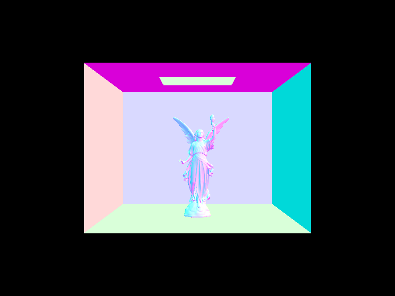

Part 1: Ray Generation and Intersection
Prompts
- Walk through the ray generation and primitive intersection parts of the rendering pipeline.
- Explain the triangle intersection algorithm you implemented in your own words.
- Show the normal shading for a few small dae files.
Responses
-
To raytrace a pixel, we take 'ns_aa' ray samples of it. First, we generate a random sample in order to generate a ray from the camera. We then estimate the global illumination radiance that this sample ray produces. At the end, we return the total radiance divided by the total number of samples we took.
To generate a ray from the Camera, we converted the coordinate in world space to a point on the camera sensor (in camera space coordinates) using a series of scalings. Then, we converted this camera sensor point to a direction in world space coordinates using a "camera-to-world" transform. We then created and returned a ray with this direction, originating from the camera's position, with min and max t values corresponding to the 'nClip' and 'fClip' camera parameters.
Next, to actually estimate global illumination radiance, we need to test for primitive intersections. We implemented intersection methods for triangle and sphere primitives that essentially checked if the sampled ray actually had a valid intersection with the primitive. If so, the intersect methods updated its 'max_t' value (so further away primitives are ignored) and - in the case of the method that took in an 'Intersection' object, set the values of the 'Intersection' object to define the ray's t-value at that point, its surface normal, which primitive it hit, and the surface's bsdf. Once we've completed all these steps, we can now start to render some basic images with normal shading. -
To implement triangle intersection, I made the first "intersect" method (without the Intersection argument) delegate to the second method. Then, in the second method, I implemented the Moller Trumbore algorithm, which is a very performant way of calculating both the time of intersection "t" and two of the barycentric coordinates, "b1" and "b2". This algorithm is initially derived from equating the parametric ray equation and the barycentric equation for the intersection point, with many substitutions and calculation tricks added to make solving the system of equations faster. Then, to implement this, I calculated the vector quantities defined in the slides - E1, E2, S, S1, S2 - using the points of the triangle ("p1", "p2", and "p3") as well as the direction and origin vectors of the (potentially) intersecting ray. Then, we calculate "t", "b1", and "b2" by computing a determinant (S dot E1) and some dot products.
We know the ray intersects the triangle if (1) "t" is not less than the ray's minimum t-value, (2) "t" is not greater than the ray's maximum t-value, (3) none of the barycentric coordinates (b1, b2, 1-b1-b2) are less than zero or greater than one. Once the intersection occurs, we update the ray's max t-value to be "t", since in the future, we'll only care about intersections if future primitives are closer than this one - that is, potential intersections with further away primitives later on won't count as actual intersections.
If the Intersection object is not null, we then set its values - we set its t-value to "t", we set its primitive to the current triangle that has been intersected, we set its normal value to the barycentric interpolation of the triangle's normals, and we set its bsdf to the bsdf of the current primitive. - Normal shading for some small .dae files:
|
|

|

|
|
Part 2: Bounding Volume Hierarchy
Prompts
- Walk through your BVH construction algorithm. Explain the heuristic you chose for picking the splitting point.
- Walk through your BVH intersection algorithm.
- Show the normal shading for a few large dae files that you couldn't render without the acceleration structure.
- Perform some rendering speed experiments on the scenes, and present your results and a 1-paragraph analysis.
Responses
-
First, the algorithm takes the vector of primitives given to it and creates a bounding box that contains all of them as well as a 'BVHNode' initialized with this bounding box. If the number of primitives at this node is less than the 'max_leaf_size', we can return the node.
Otherwise, the algorithm creates two vectors of primitives, one 'left' vector and one 'right' vector. It then determines which dimension has the largest 'extent', i.e. which dimension has primitives furthest from each other. It then finds the overall bounding box's centroid and uses the corresponding dimension in the centroid as the splitting point for all primitives in the current node. For example, if the largest dimension of the 'extent' is the x-dimension, we use the centroid's x-value to split primitives into 'left' and 'right' vectors. If a primitive's x-value is less than the centroid's, then it gets put into the 'left' vector; otherwise, it's put into the 'right' one. We then recursively assign the 'left' and 'right' nodes of the current 'BVHNode' by calling 'construct_bvh' on these 'left' and 'right' primitive vectors until there are no more than 'max_leaf_size' primitives at each leaf node.
Note: if either vector is empty after the splitting, then all the primitives must share the same centroid; if they didn't, there would be at least one dimension that would have a difference between the min and max points, meaning they wouldn't have all ended up in the same vector. Thus, we can simply put approximately half of all primitives intothe left vector and then the rest into the right vector, making neither empty. Both nodes would again run into the issue of all primitives having the same centroid, but this would be recursively handled until each node has no more than max_leaf_nodes. -
Firstly, we calculate where the ray intersects with the 3 planes parallel to the x-, y-, and z-axes relative to the BBox's min point ('tmin's), then the 3 planes parallel to those axes relative to the max point ('tmax's).
Then, we look for the largest 'tmin' (time of ray entrance) and the smallest 'tmax' (time of ray exit) because, just because the ray intersects some planes, doesn't mean it intersected the bounding box, and the largest 'tmin' and the smallest 'tmax' should be the actual intersection points on the box.
However, if the 'tmin' of a particular plane is ever larger than the smallest 'tmax', or if 'tmax' of a plane is less than the largest 'tmin', then we know the ray has missed the bounding box entirely, meaning we can return 'false'.
We also want to ensure that 'tmin' is less than 'tmax', so we swap these two values where necessary before assigning them to the intersection times 't0' and 't1'. We then return 'true' for whether or not the ray intersects if we have not previously returned 'false'. - Normal shading for some large .dae files
-
First, let's compare the stats for cow.dae.


Without BVH acceleration With BVH acceleration
Notice that we are performing up to 3 orders of magnitudes fewer intersection tests per ray with BVH acceleration; this is because we are no longer testing intersection for every single primitive. Instead, we leverage the bounding volume hierarchy, at first testing only if the ray intersects with the overall bounding box. If it doesn't, we move on and don't test any of the primitives below this level of hierarchy. If it does, we check for intersection in the left bounding box and the right one recursively, until we hit a leaf node and check for intersection with the primitives inside the leaf. This saves us massive amounts of computation - rather than testing thousands of primitives for each ray, each ray can check a handful of bounding boxes and a handful of primitives at most. This results in a decrease in render time of around 3 orders of magnitude as well, even including the (trivially) increased time necessary to compute the BVH.
Let's also examine the rendering stats for larger .dae files:
blob.dae, 196608 primitives dragon.dae, 105120 primitives CBlucy.dae, 133796 primitives wall-e.dae, 240326 primitives
It would seem that the time to create the BVH is approximately linear to the number of primitives there are, which we can see by comparing the dragon and Wall-E models' stats. The dragon has close to half the primitives of Wall-E, and correspondingly, its BVH construction time is just under half the time for Wall-E (about 1.2 seconds vs 2.6 seconds). We can also see that the number of intersects is pretty low for all and also grows somewhat linearly with the number of primitives in the model (the dragon has about 2.3 average intersection tests; Wall-E has about 4.0). Nevertheless, it is impressive that render times are all under 1-2 seconds, even for .dae files with 240K+ primatives, where it would have been unimaginable without this acceleration, just based on the stats for cow.dae before BVH.
|
|

|
|

|
|
Part 3: Direct Illumination
Prompts
- Walk through both implementations of the direct lighting function.
- Show some images rendered with both implementations of the direct lighting function.
- Focus on one particular scene (with at least one area light) and compare the noise levels in soft shadows when rendering with 1, 4, 16, and 64 light rays (the -l flag) and 1 sample per pixel (the -s flag) using light sampling, not uniform hemisphere sampling.
- Compare the results between using uniform hemisphere sampling and lighting sampling, including a 1-paragraph analysis.
Responses
-
Hemisphere Sampling
Hemisphere sampling is accomplished by repeatedly sampling directions from a hemisphere around the first point that a ray intersects a primitive. We then convert this direction into a new world-space ray. We then test whether or not this ray intersects something in the scene by testing if it intersects the BVH. If it does, we add the irradiance of the new intersection (the incoming radiance multiplied by the BSDF of the original intersection, a cosine term, and the inverse of the uniform PDF) to the total irradiance. This total irradiance is later averaged by the number of samples taken, and this average is the final radiance for this ray.
Lighting Sampling
Lighting sampling is accomplished similarly to hemisphere sampling, but instead of sampling from a uniform distribution across a hemisphere, we directly sample each light in a scene. We start by iterating over all the scene lights. In each iteration, we check if the current light is a delta light (i.e. one light, one sample) or an area light (i.e. an "area" of light, multiple samples), then we sample the current light to get the incoming radiance. Next, if the sampled light point is not behind the object surface and the new ray doesn't intersect with something (i.e. the light is not blocked), we add its irradiance (the radiance sample times the BSDF of the original intersection, a cosine term, and the inverse of the PDF) to the total irradiance, which we later average by the number of samples. (Note: we add the average irradiance of an area light to the total irradiance, not the individual irradiances of each area light sample.)
- Some images rendered with both implementations of the direct lighting function:
- CBbunny.dae rendered with 1, 4, 16, and 64 light rays using light sampling:
1 light ray 4 light rays 16 light rays 64 light rays
We see that with more and more light rays, our renders get less and less noisy. This is because with more light rays bouncing around and striking places, it's more likely that some of them will actually intersect with primitives, resulting in smoother-looking images with less harsh, less black shadows. - We can see in Response 3 that uniform hemisphere sampling tends to leave us with a noisier result than lighting sampling when sampling at the same rate with the same number of light rays. This is because, in general, most directions in a hemisphere will not actually intersect with any light, meaning we get a lot more zero samples. Meanwhile, in lighting sampling, we do occasionally get zero samples, but much less frequently since we're sampling directly from a light source, rather than simply hoping we hit a light source. Thus, importance sampling generally converges faster under the same parameters as hemisphere sampling and with less noise, though it may sometimes require more samples/calculation.
|
|
|
|
|
|
Part 4: Global Illumination
Prompts
- Walk through your implementation of the indirect lighting function.
- Show some images rendered with global (direct and indirect) illumination.
- Pick one scene and compare rendered views first with only direct illumination, then only indirect illumination. (You'll have to edit at_least_one_bounce_radiance in your code to generate these.)
- For CBbunny.dae, compare rendered views with max_ray_depth equal to 0, 1, 2, 3, and 100 (the -m flag).
- Pick one scene and compare rendered views with various sample-per-pixel rates, including at least 1, 2, 4, 8, 16, 64, and 1024. Use 4 light rays.
Responses
-
Firstly, we must alter PathTracer::est_radiance_global_illumination to return both the direct and indirect illumination, starting with the zero-bounce emission from an Intersection's BSDF, then adding at least one bounce of radiance. We then implement one_bounce_radiance, which just returns either estimate_direct_lighting_hemisphere or estimate_direct_lighting_importance depending on the 'direct_hemisphere_sample' flag.
This one_bounce_radiance is the foundation of the at_least_one_bounce_radiance function. Once we initialize our radiance with direct lighting, then we sample the BSDF of the original intersection to get a new radiance and ray direction (i.e. this is simulating a "bounce" off this primitive). Next, if this ray hasn't reached a depth of 1 and if we don't randomly terminate the recursion (thanks to 'Russian roulette'), we test if this new ray intersects the BVH. If it does, we add the radiance resulting from this new intersection to the total radiance after weighting it by the previous sample's radiance, the inverse of the pdf, and the inverse of the probability of not terminating. We also update the depth of the new ray and continue recursing until we hit a ray depth of 1 or have our recursion cut off by Russian roulette. -
Some images rendered with global (direct and indirect) illumination:
CBspheres_lambertian.dae bunny.dae banana.dae -
CB_spheres_lambertian.dae rendered with ONLY direct lighting, with ONLY indirect lighting, and with both:
ONLY direct lighting ONLY indirect lighting BOTH direct and indirect
The first image is rendered with only a single bounce, whereas the second is rendered without the first bounce at all. This helps us visualize how these two illuminations help "add" to produce the high-quality, well-shaded image we're after. -
CBbunny.dae, rendered with max_ray_depth equal to 0, 1, 2, 3, and 100:
max_ray_depth = 0 max_ray_depth = 1 max_ray_depth = 2 max_ray_depth = 3 
max_ray_depth = 100
We notice that when max_ray_depth=0, we only get direct lighting effects. When max_ray_depth=1, we see some indirect illumination as well, lighting up some of what was previously all-black shadows. When max_ray_depth=2, we see a bit more color bleed on the sides of the bunny, as well as in its shadow and in the corners of the room. When max_ray_depth=3, it gets more difficult to discern the difference between this and the previous depth of 2 - one could see perhaps slightly darker shadows around the edges of the dark, though there is still color bleed. When max_ray_depth=100, it is especially difficult to distinguish between this image and the previous; perhaps it is slightly lighter or has more color bleed, but ultimately, it seems to indicate that we don't need to render up to 100 bounces to get a sufficiently illuminated view, since each subsequent bounce contributes less and less light/information. -
CBspheres_lambertian.dae rendered at 1, 2, 4, 8, 16, 64, and 1024 samples-per-pixel with 4 light rays.
1 sample 2 samples 4 samples 8 samples 16 samples 
64 samples 1024 samples
We can see that, the more samples we use per pixel, the less noisy our image becomes. Moreover, we can also see the spheres' shadows growing more diffuse and lighter, as well as transition more smoothly the further they get from the sphere. The noise with 1 spp (sample-per-pixel) is extremely noticeable and is only slightly mitigated with 2 or 4 spp. By 8 and 16 spp, the noise is still visible but less splotchy and the colors (including the color-bleed) look a bit more accurate. By 64 spp, the image appears a bit fuzzy but generally, we don't see as many small patches of black and the colors seem to match that of the 1024 spp image. Of course, the 1024 spp image looks the most noiseless and smoothest of them all - the noise is much more imperceptible and all the shadows have become a bit softer.
- Walk through your implementation of the adaptive sampling.
- Pick one scene and render it with the maximum number of samples per pixel at least 2048. Show a good sampling rate image with clearly visible sampling rate difference over various regions and pixels. Include both your sample rate image (which shows your how your adaptive sampling changes depending on which part of the image we are rendering) and your noise-free rendered result. Use 1 sample per light and at least 5 for max ray depth.
-
If 'ns_aa' = 1, we sample the same way as before. Otherwise, we still try to iterate over 'ns_aa' samples, generating samples and sample rays and calculating the radiance produced by that sample ray. However, the change is now we add the illuminance (calculated from the radiance returned by 'est_radiance_global_illumination') to a running total 's1'; we also add the illuminance squared to 's2'. These values are used to run our convergence check, which we only run every 'samplesPerBatch' samples.
In this convergence test, we calculate the mean (mu) and variance (sigma^2) of the samples thus far, then calculate I = 1.96 * sqrt(sigma^2 / n). If 'I' is less than or equal to 'maxToleranace * mu', we stop sampling this point because the pixel has sufficiently converged. Then, we assign the number of samples we actually collected to the corresponding index in 'sampleCountBuffer'. Finally, we return the total radiance thus far averaged by the actual number of samples we took.
If we never pass the convergence test, we simply collect all 'ns_aa' samples, store 'ns_aa' in 'sampleCountBuffer', and return the average radiance.
- CBbunny.dae rendered with adaptive sampling at 2048 samples per pixel and 1 light ray:
Part 5: Adaptive Sampling
Prompts
Responses
|
|
|